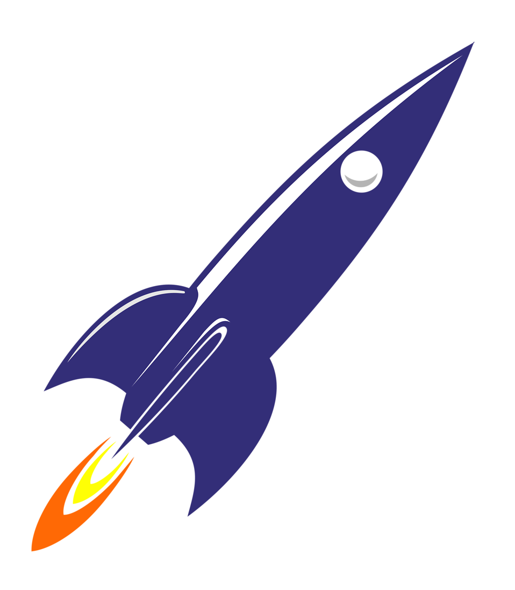

Особенность поверхности: 1. Огромное количество ударных кратеров, которые постепенно образовывались на поверхности в течение миллиардов лет. 2. Наличие равнин между кратерами. Считается, что эти гладкие участки поверхности были созданы в результате движения лавовых потоков по планете в прошлом. 3. И скалы, высокие и длинные, разбросанные по всей поверхности.
Период обращения вокруг Солнца: 87,97 суток.
Диаметр на экваторе: 4878 км.
Период вращения (оборот вокруг оси): 58 дней.
Температура поверхности: 350 днем и –170 ночью.
Атмосфера: очень разреженная, гелий.
48км/с - средняя скорость движения Меркурия по орбите вокруг Солна, что почти в 2 раза больше скорости Земли. Меркурий самая быстрая планета Солнечной системы
Меркурий - самая маленькая планета Солнечной системы. Она в 2.5 раза меньше Земли.
Каково было бы жить на Венере? Не весело. Вы бы моментально задохнулись ядовитым воздухом и были бы раздавлены огромным атмосферным давлением. И сожжены высокими температурами. После — растворены концентрированной серной кислотой, из которой на Венере состоят облака.
По всей видимости, Земля сформировалась из газопылевого облака, как и другие планеты. Частички газа и пыли сталкиваясь, постепенно "растили" планету. Температура на поверхности достигла 5000 градусов Цельсия. Затем Земля остыла и покрылась твердой каменной корой. Но температура в недрах и по сей день довольно высока – 4500 градусов. Горные породы в недрах расплавлены и при извержении вулканов выливаются на поверхность. Только на земле есть вода. Поэтому тут и существует жизнь. Она расположена сравнительно близко к Солнцу, чтоб получать необходимые тепло и свет, но достаточно далеко, чтоб не сгореть.
Период обращения вокруг Солнца: 365,3 суток.Что плохого в Марсе для будущих колонизаторов и гостей, так это пылевые бури, которые могут подняться за несколько часов и за несколько дней обойти всю планету. Это самые крупные и жестокие пыльные бури в нашей солнечной системе. Марсианские пылевые вихри возвышаются над поверхностью земли так же, как гора Эверест, и набирают скорость в 300 км/ч. Однажды возникнув, такая буря может держаться на поверхности Марса месяцами. Все это сопровождается мощными перепадами температур.
Период обращения вокруг Солнца: 687 суток.Атмосфера Юпитера порождает бури, которые в два раза больше самой Земли. Эти монстры, в свою очередь, порождают ветры со скоростью 800 км/ч и титанические молнии, которые в 100 раз ярче своих земных аналогов. Под этой пугающей и мрачной атмосферой прячется океан из жидкого металлического водорода глубиной 40 000 километров. Здесь, на Земле, водород представляет собой бесцветный прозрачный газ, но в ядре Юпитера этот элемент принимает совершенно другой вид. В наружных слоях Юпитера он такой же, как на Земле. Но чем глубже, тем выше давление. В конце концов оно становится настолько велико, что сжимает даже электроны в атомах водорода. В таких условиях водород превращается в жидкий металл, проводящий электричество и тепло, а также отражающий свет. Не самые приятные условия.
Период обращения вокруг Солнца: 11 лет 314 суток.Атмосфера Юпитера порождает бури, которые в два раза больше самой Земли. Эти монстры, в свою очередь, порождают ветры со скоростью 800 км/ч и титанические молнии, которые в 100 раз ярче своих земных аналогов. Под этой пугающей и мрачной атмосферой прячется океан из жидкого металлического водорода глубиной 40 000 километров. Здесь, на Земле, водород представляет собой бесцветный прозрачный газ, но в ядре Юпитера этот элемент принимает совершенно другой вид. В наружных слоях Юпитера он такой же, как на Земле. Но чем глубже, тем выше давление. В конце концов оно становится настолько велико, что сжимает даже электроны в атомах водорода. В таких условиях водород превращается в жидкий металл, проводящий электричество и тепло, а также отражающий свет. Не самые приятные условия.
Период обращения вокруг Солнца: 29 лет 168 суток.Уникальная планета Солнечной системы. Ее особенность в том, что она вращается вокруг Солнца не как все, а "лежа на боку". Уран тоже имеет кольца, хотя их труднее увидеть.
Период обращения: 84 года 4 суток.На Нептуне вы встретите постоянные ветры, которые овевают планету с ужасной скоростью. Реактивные потоки ветра толкают замерзшие облака из натурального газа через северную границу Большого Темного Пятна, урагана размером с Землю, на скорости 2000 км/ч. Это в два раза больше скорости, необходимой для преодоления звукового барьера. Конечно, под таким ветром долго не протерпишь. Человек, который окажется на Нептуне, скорее всего, будет разорван на части и навсегда потерян в этих жестоких потоках. Остается загадкой, откуда Нептун находит энергию для того, чтобы породить самые быстрые планетарные ветры в Солнечной системе, поскольку находится весьма далеко от Солнца и весьма холоден внутри.
Период обращения вокруг Солнца: 164 года 292 суток.24 августа 2006 года Плутон потерял статус планеты. Хотя технически Плутон не классифицируется как планета, на него все еще можно приземлиться. Только не позволяйте красивым картинкам ввести вас в заблуждение: Плутон далеко не зимняя сказка. Это чрезвычайно холодный мир, на большей части поверхности которого на протяжении всего плутонианского года в 248 лет лежат одеялом замороженный водород, двуокись углерода и метан. Эти льды приняли всевозможные цвета от розовато-бурого до белого под воздействием гамма-лучей из космоса и далекого Солнца. В самые ясные дни Солнце обеспечивает Плутону столько же света и тепла, сколько полная Луна — Земле. Температура на Плутоне — примерно -230 градусов по Цельсию. Слишком холодно даже для сибиряков.
Период обращения вокруг Солнца: 248 лет Назад
Назад